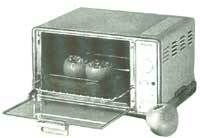
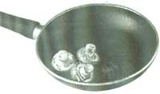
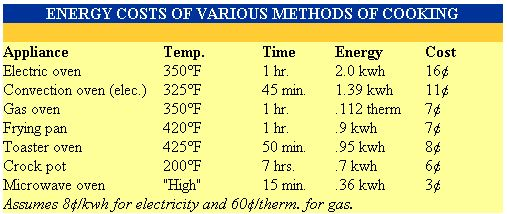

ENERGY TIPS
Choosing quicker and more efficient methods of cooking are some of the easiest ways to save on your energy bill. The average family cooks 1.5 meals a day and each of those meals takes an average of 30 minutes of energy to prepare; because traditional ovens have a considerable appetite for energy, the yearly costs of serving hot food to the family can be anywhere from $150 and up. But you can save considerably on costs and still keep the oven fires burning with a little advice.
As you might imagine, using as small an oven as possible will be the most efficient way of preparing any meal, but you might not realize just how disparate in their energy consumption ovens are.
Several ways of cooking the same casserole are shown in the following chart.
• Use as small a pan, as little water, as little preheat time, and as little peeking in the oven as possible.
• For stove-top cooking, consider using a pressure cooker. By building steam pressure, they cook at a higher temperature, reducing cooking time and energy.
• Keep burner pans (the metal pans under the burners that catch grease) clean so they'll be more effective at reflecting heat to the cookware. Blackened burner pans absorb a lot of heat, reducing burner efficiency.
• If you use electric burners, solid disk elements, and radiant elements under ceramic glass, use flat-bottomed cookware that rests evenly on the burner surface. The ideal pan has a slightly concave bottom because when it heats, the metal expands and the bottom flattens out. Electric elements are considerably less efficient if the pan does not have good contact.
• Always cook with the lid on your pans. Cooking without lids can take three times as much energy.
• If you have a gas range, make sure that the gas burns blue. If the flame is yellow, the fuel is burning inefficiently and the range should be checked by the gas company.
• To reduce cooking time, defrost foods in the refrigerator prior to cooking.
• Food cooks more efficiently in ovens where air can circulate freely. Don't lay foil on the racks. If possible, stagger pans on upper and lower racks to improve air flow.
• Cook double portions when possible, and freeze the remainder. Less energy is required to reheat than to cook the dish over again.
• Using glass or ceramic pans in ovens allows you to reduce cooking temperature by 25°F with no extra time required.
• Microwaves operate better when the interior is clean. Spills will absorb energy waves just as readily as the cooking food.
From Consumer Guide to Home Energy Savings (1991), published by the American Council for an Energy-Efficient Economy (ACEEE). For more information, write to: ACEEE, 2140 Shattuck Ave., #202, Berkeley, CA 94704.
|
 |
 |
 |